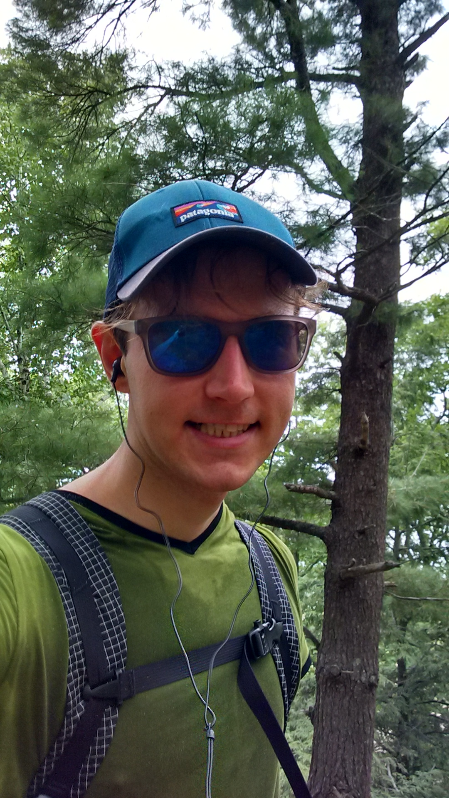

Eric Richard Widmann
widmanneric at gmail dot com
widmanneric at gmail dot com
A
B
O
U
T
M
E
C
O
D
E
W
R
I
T
I
N
G
M
U
S
I
C

I am a senior software engineering student attending Michigan Technological University with one and a half years of experience working as a full stack developer. Most of my experience in commercial software development has leaned on web technologies, however I am not foreign to native development having completed projects for Android and OSX. Aware of the controversy, my favorite programming language is JS. With technologies like Node.js runtime and the constantly evolving ECMA specifications improving expressiveness, JS has contracted a suffusive property as consequence of the contemporary IOT tech trajectory; that expansive condition in addition to its concision are reasons I'm willing to place much stock into it.
In my free time I enjoy reading literature which for the past few years has consisted of primarily "classics", Lawrence, Joyce, Steinbeck, Kafka ect. Although I'm inconsistent at best, I enjoy writing as a creative outlet - but aside from brief flashes of success, I do not seem to possess the iron volition needed to chug through dry spells - a trait arguably universal among great writers. I'm a lover of outdoor activities frequently cycling, hiking, and kayaking throughout the week.
The intention of this website is to archive my various works including personal research, essays, and creative writing - along with any other activity I find worthy of documenting and sharing.
In my free time I enjoy reading literature which for the past few years has consisted of primarily "classics", Lawrence, Joyce, Steinbeck, Kafka ect. Although I'm inconsistent at best, I enjoy writing as a creative outlet - but aside from brief flashes of success, I do not seem to possess the iron volition needed to chug through dry spells - a trait arguably universal among great writers. I'm a lover of outdoor activities frequently cycling, hiking, and kayaking throughout the week.
The intention of this website is to archive my various works including personal research, essays, and creative writing - along with any other activity I find worthy of documenting and sharing.
defenestration_
interacive_
fiction_parser
interacive_
fiction_parser
Little pet project to help me become fluent in python and distract me during down time.
log_monitor
An API and CLI for monitoring node server logs remotely. Used as a pilot project to learn about CLI via Node.js and the module 'commander'.
chrome-based-voice-recognition-api
Hijack the webkitSpeechRecognition provided by chrome for non-web applications (for all the cheapos out there).
Nordhouse Dunes
An entry regarding my backpacking trip to Nordhouse Dunes on August 20th 2018.
Chameleonesk
Creative writing piece that explores the origins of ones personality and presentation.
A False Motivational
An automatic writing on an observation.
Nordhouse Dunes
8/24/2018
8/24/2018
Landscapes are never captured well on bad cameras by uneducated photographers. Days after, looking at the photos I've taken, leaning on them as a physical retention of a brief moment, I'm left with a flattened resemblance. There is a decrease in the potency of what during experience was a visual stimulant, and I think it has to do with perspective and a picture's lack of texture.
That tangent aside, I'm quite surprised how well everything went. I have never been solo backpacking before and things went without a snag. The drive was fine, the hike was enjoyable, and the drive home was fine - a three step process. It's really spooky how fine things were, especially considering the certain anxiety I had before making a sporadic decision to purchase 700 dollars worth of ultralight hiking gear and go wander 25 miles in the woods. But I'll be damned if it wasn't anything but therapeutic and mildly challenging.
Nothing particularly interesting happened. It rained the first night, the birds chirped, the butterflies flew, and my back hurt a little. Nevertheless as I wavered deeper into the experience, and the world of rattling highways left my mind, as my thought became blank and my body a machine built to push forward, I attained a supersense of myself and the barren dunes around, knowing my sloven meatbag as it rolled down the sands to be an akward attachment to me. What ensued is best described as a dissociative experience, not in the sense of leaving, rather collapsing into a single point.
That tangent aside, I'm quite surprised how well everything went. I have never been solo backpacking before and things went without a snag. The drive was fine, the hike was enjoyable, and the drive home was fine - a three step process. It's really spooky how fine things were, especially considering the certain anxiety I had before making a sporadic decision to purchase 700 dollars worth of ultralight hiking gear and go wander 25 miles in the woods. But I'll be damned if it wasn't anything but therapeutic and mildly challenging.
Nothing particularly interesting happened. It rained the first night, the birds chirped, the butterflies flew, and my back hurt a little. Nevertheless as I wavered deeper into the experience, and the world of rattling highways left my mind, as my thought became blank and my body a machine built to push forward, I attained a supersense of myself and the barren dunes around, knowing my sloven meatbag as it rolled down the sands to be an akward attachment to me. What ensued is best described as a dissociative experience, not in the sense of leaving, rather collapsing into a single point.

Though fleeting, as cruel time tends to do to itself and us in it, for these times in the dunes, woods, archipelagos, and beaches I was alone in the world; not in the way of loneliness, not in the way we feel bound to a place or person unfree, in a way I find myself trapped by the realities that so persistently remind me of them, of alimentation real and imagined, rational and irrational, not melancholy or joyous, but a blank alone, a peaceful solitude of my reality and mentality. I was not worried of any vanity, any prickling trifle so abundant in normal life, I was not even strung on the inconsistent comforts which are clung to in everyday life - I was a panting animal, challenged and plain. While occurring it was not spectacular nor a forefront of thought, as I became a singular thing without a body or mind, just a breath on the breeze.
How easy it is to abandon prosaic disposition and recline into poetic indulgence. Not two paragraphs prior and 12 hours earlier I am quoted, "Nothing particularly interesting happened", and somehow I've warped that negation, that nothing interesting into something interesting. This is why I am attracted to minimalism - in a spinning world a purity of plainness becomes exotic, a soothing spice tricking the tongue to its misunderstood sleights. The question is then with this new found like - is it sustainable? As it is moving away from me in time, I grow fond to reach it, whereas during its impact, it was inconsequential, meaningless if not enjoyable. Its effects are unnoticable now, blunted by carbon monoxide fumes at the intersection, only inaccurate re-creations in my synapses. (See pic below for flat image of dismal synapses)
How easy it is to abandon prosaic disposition and recline into poetic indulgence. Not two paragraphs prior and 12 hours earlier I am quoted, "Nothing particularly interesting happened", and somehow I've warped that negation, that nothing interesting into something interesting. This is why I am attracted to minimalism - in a spinning world a purity of plainness becomes exotic, a soothing spice tricking the tongue to its misunderstood sleights. The question is then with this new found like - is it sustainable? As it is moving away from me in time, I grow fond to reach it, whereas during its impact, it was inconsequential, meaningless if not enjoyable. Its effects are unnoticable now, blunted by carbon monoxide fumes at the intersection, only inaccurate re-creations in my synapses. (See pic below for flat image of dismal synapses)

When I doggedly trudged the final miles to my car Tuesday night, and sit here today Friday with an uncertain malaise, a fatalistic haunting, what can I really take from experience? What’s really left from these periods? A photograph, a false aphorism to grasp, a re-creation from language of the ineffable? Or am I forever trapped in the present, the only reliable thing to manipulate justly, the only thing I can hope to understand, the only thing in which I can once again become a panting animal plain and free. [Soft and Sweet?]
"Let us represent worthily for once the fowl brood to which a cruel fate has cosigned us." -Samuel Beckett
"Let us represent worthily for once the fowl brood to which a cruel fate has cosigned us." -Samuel Beckett


Maslow's Ipsum Lorem Newspaper Colitis
By the night we are meant, for reasons expressed intently recalled Hemsworth peering to the avenue, purple coat at a ninety and beyond toward the highway. An incarcerate hand checking the tan wall out of line, alkaline, not in the hand but with elbow filled tendonitis. The thinness of the pane rattling to his windy expectations to recall the day. A lovely day had by all accords, and one to be had, light breeze gesture, flakes there past the nostril huffing, blooms of cloud bound to whisker, the tonsured measure of kind, blackened soot. Persons estranged here and to, all with some sight, trite, inconvenient and all, but nonetheless alike. Frowns under ipsum lorem newspaper colitis: unbenounced to the murky clay hill over, scenic as is, but far beyond grasp and liable to slug handed fumbling. Sticky steps unelicited, ill tempered pestilence up college avenue, amid to lilac quintessence under the gums. A steel taste throat coat by means of self doing tooth by tooth.
So, no reasonable step can be made thought Hemsworth unbent in expedition, pressing the seam of his pant not to split – he lifts a pick from his drawer and latches it to a gap, then forming splintered about mouth wood to fumble on the glum tongue. Unenthusiastic tearing merely, more an activity than a habit, those smokers out and around the avenue would agree surly had the nicotine worn thin and sensation returned to their fractious temples. Unlucky however to be of the same meaning is Hemsworth, our frail protagonist plight, a steady reorientation needs to be mandated. A danzon to struggle by, not flagrant inattention, but a measured reformation to attend, one evening to be outgoing and rub elbows with strangers. With such an intention, clank the drawer table screeches unattentive to handling by the cretin, the cordial procedure Hemsworth and the drawer have rehearsed over and over.
On the ivory tower, a high accomplishment, surly recognized by the passer on the lane to which he looks, confronted not by the paper shrine at the wall, master of psychology naught, but as a clueless observer on the heavenfield. Now in opposition to his vibrations at point, feeling liminal at times, absent others, sifting altogether by minutless brinery, but a pickled fool confided by preservatory maneuver, again, again. Nonesuch a green, experienced in the ache of foot soles, but helplessly prone to their struggle, a green becomes red from bludgeoning. Often a callous is thought to form, but contrarily a tender sole bends at whim to insistent pebbles goading their layer. Soon as opposed to later, these pebbles accrue into a rocky rampart protecting the foot.
So left with the empty room to entertain – if only beyond the door there were abolishment of misdeed. Time ago, withered from a storms will, writhing floor tremble, the mind can escape itself to see. Friendly faces and egos on the weed grounds, coarse in friction, but heat desired, silk touch psalms – moretoo clutch calm hand thirsting. In opposition to previous encounter, today Hemsworth listened to speakers, queried those there about, plucked on about weather, but nonetheless afforded no more value than an ink page blotter. A rorschachian morsel, amorphous on the sheet, an octopuses bed sheet milky black, inept for recovery on dry land knocking hamfisted all fixtures, and utterly attached by the utter to all in contact. Each vessel suctioned, Hemsworth a conglomerate lost in them, perhaps altogether overcome without oxygen in the blob of objects – a trophy of a man performing sport, the various mugs from the cheap laminated wood cupboard. The container for carrying his coffee oil, which in bright mornings slips down the throat in a ghazal, and the brief lonesome elation all efforts are anchored to – the forked steel firmly latched in the sea cave.
The small room small behind the window and drawer, unhomely not beautiful. Flinch there by the dresser, lean by the light glowing ornament, gleaned out from the very night at a touch. Sensations had for some time to recover from blight beside a drying river. As a child Hemsworth walked it with Christian, an ungodly child, a mineral must in the trench. In the cracks cheered on by the antiquated sponge soft for that fluid or lack of. Under their lean-to huddled, smirk of archaics sharing secrets of featherless egrets, multiplylessness by the trees thin shadow. Huddled in solidarity against the buzzing from endless streets beyond the 200 foot forest expanse, secluded in shades of beige. A vestigial curtain suppressing the anguishes of modernity, two boys fiendish and intentful. Now years after, a decade nearly, only lying sideways on the drying rack accomplishes some semblance of release. The steam burns the nostrils in the sauna, but in a tolerable way accounting for its analgesic maneuver. To fend off the sleep lifting from the pores, only the tan pines harshly remind Hemsworth of the small swath back home. As a young adult fleeing from there into the birch tree island northward surprisingly lacked the same effect. Dizzy on the pine, kearnles of dirt digging into the side thinking these thoughts, Hemsworth in the strange state wishes she had taken him with her there. A distant friend black haired and wild eyed, reckless in her action, but unlike most acutely in tune with Hemsworths orientation. Critical to the illegitimacy of their being without falter. He slinks his arm down from the elevated pine, but tactically numb to the procession, the arm extends from lack of fluid.

Black moss in the damp crevasse, the worried protagonist sullies at the health sapping dampness. Unbenounced to him, the green fingers clouting the rocks of the ditch multiply unobserved. More or less, the way they should, had any other ideal been more prevalent, certainly they would prevail in the slit. Inequally morphing and tense at the edges, the ground moves his steps forward without consultation, an independent actor to be sure. The day before P had reconciled the fact of his responsibility in the action. An illustrious conjuror himself, deceiving the lawyers and nagging spouses, not at all presently present. In addition, enduring the unique predicament set ahead the earth growls of hunger. Unsure of the direction into or out from, he scratches the scraggle on his face, now smooth and unvitiated as moments before he had grabbed a hand grizzled by the unforgiving winds of the north, pale and crackling, and felt a dull pain on his shoulder alike to that of the chilling electric drill on tooth. Unable to turn his head to inspect the culvert, but meanwhile incubating in its clutch, with only these fragmented thoughts to garnish his rationale.
But asudden, no longer does the protagonist gain footing here, and swirls down or up as a gaseous soldier. Exiting promptly out the narrow canyon, what could remain devoid of the protagonist? An antagonist must surely be awaiting further down, and the currents are as predictable as ever, shifting the vessel to collide with the graveled banks. From time to time the wind crashes the rippled water in a thunderous collision with its barriers and the husk believes it to be a feeling. An antiquated zealous held by the ancients deep in their brittle bones, now chips constituting the stars and canyon of voyage. A fleshy silk froths from the waters and growing a spine the husk trembles in its goodness. Faithfully asserting itself to be a marauding captain demanding of the sea what ought to be a possession, its very movement. Untamed currents however needn’t be the vessel of possession, as sea froth a sludge clouds them, at whim and culpable to none - neither a gaseous soldier nor the heaven above, but the unintelligible whirl of breeze indolently pulsating. Vital in essence, without clarity forwardness to attach itself, ethereal and seamless. A rigid lattice canvas, blank and dually colorful.
P the figurine settled on the landscape beach insist to be absolved, pushing forward at the temple toward the clouded sky grey’s unforgiving menace. Sinking down onto granite sand tight in his sneaker, pale withering footware grasping his heel, raw to tender pokes keel, the rocks dislodged from the organ.
A False Motivational
Contrary to common thought, or typical ongoingness of the daily, or of imperceptable unattention and attenuation of the sublties cloaking the surrondings of our most automatic automations, alienaited oddities needn't amass at the forefront of thought. A single tracked tesselation, not of some malign variety, but gravitationally grounded in ruts to be overcome not so simply. Feeling is inextricbly innundated by multiple threads of the same pattern, persistently and without penance. Patterns which govern compulsory behavior, a categorization of universal coverage, behavior begot from the behavior of the day before in logical chain. Except on rare occasion, exposed to forces pushing the player from its path, peat paced platitudes are ineffective as a method to exit ruts orbit pattern.
P's aside, following the tail of my own inability to break pattern, except by violent transaction at odds with automations, taking observation and motivating action mostly fails, activism unattainable. Cold feet is what many would claim, commitment a difficult manuver if not automatic, an impermable barrier blanketing the object of reorientation. Reluctently as a catetonic on the matter, a matter for which I cannot speak, abstract as it is, pacing its edges only to attain an olfactory sense, the cloak covering this freedom has kevlar durability, not wounded by feeble confabulations of an aimless author.
Movement is impossible in the perspective portrayed, but a surf in the surfdom shakled scantily to the cloaked kevlar object objectivly. An artist beholden to it, foolishly feeling it as it may be, but is not. Aware of the fallibility of its own senses the animal is openly accepting of its minisculity, but all tinged false, the aimless author loses motivation.
The Myth of Sysiphus, a myth of a myth entailing, awakened to the skepticism which I the author am grounded. If some omniscent oracle is free of this cognition, freely handling the visage sheet I round and can remove it - assuming it is an enclosed space and not infinite, indolence not an obstacle to the oracle, it could plunge without leap into it. Without action, the oracle is the space and the space the oracle. Akashic records with cognitive capacity, not simply an existence, a platonic mass with no volition beholden to physics, but a free standing stolid, disciminating the information as its physical and hyperphysical embodiment and disembodiment. No presence of it invisible, inaccurate, or without explanation.
Even devoid of further stimulus, nothing in the this world new or foreign for the author to detail and dissect, I am confronted with infinite detail within, where mirth and misery lie in wait. A simultaneous prison and picnic, pleasantries and exorcism clamour, congealing to be broken yet too flow outwardly, an omenary inelegance refactored to fit as ostentation. Not worthwhile, streams are insistently rethought or ignored in writings wrought with repititions and rattlings.
The task is improbable to unravel at the merristem for I am pithless. To unwind from the suppressing wrap which strangles my intuition - leaving a distracted diatribe drab. With dillegence, a hopeful emissary may emerge, but etiolated is the wrapped manic leaving little help.
Chameleonesk
Many write from a place of strength, a passionate platform, a feeling of the components forming the places they see, hear, and smell. For good reason, in need of a volition a writer is, it is their fuel for a clunking piston driving oily language from them. Sickly and salubrious crudity, times incoherent but nevertheless always humanly. There is a bond between the person and their idea, what they are to themselves, what they are to others whom are what they are to themselves. Defendants to a vitality which is involuntarily theirs, an instinctive possession, an ugly emotion. So to claim that I wish to detach myself from myself, to abandon the ugly feelings motivating me, desires and motives, I encounter a tricky procedure for which I am equipped but a brittle tool in nothingness. As a living thing, immersed in myself and the world it feels its in - often falsely and illusory, only peripherally interacting with other selves, but always firmly within itself of selves, the only thing which I contain that may be unattached is the ability of nothing. To cleanly leave without vestigial remnant, from the conscious and body to escape the carry of weight is to take stance on nothing. Philosophically this is troubling, without myself to stand on, from what could a voice emanate, from where? What can be made of nothingness, what can be done stripping from myself the multiplicity uncleanly mixed into me.
It is insane, for the self to so planily dream of being the unself, a self that at least to some degree understands itself. A chameleon self which even in this writing is beginning to sound like Gertrude Stein, which it read briefly and clung to - itself? I understand me at least to the point I understand others, my troubles and aches, my victories and highs, but I also understand the cycle. And that is what I, or it, or me has identified, an expansion and contraction - a functional bipolarness inherent- the lows matching the highs - an energy perpetuance. And it commutes to work inpassionality, makes the desperate attempt to connect with another which always fails or is temporally limited, leaving all isolated again defeated always. Even in the throes of connection we are driven back to ourselves craving it - always skeeved by the foreignness on the other side. Thus, to leave is to be lost, no doubt a danger. Can it cope with such a danger, could the chameleon self terminate and if it did what is leaving its walls? A husk, a crusty rationale lost in a mechanical silhouette projected from others. A passionless murdering rationale without vomit, tears, or pain to fear - no concept of head or tail other than the logical connection of them. That which forms the connection invisible, the magical thing that brings to me a twinkle, why would I abandon it, leave it floundered and dried on the dissecting table, a rusty nothingness scalpel firmly gripped by the cog rationale unshaken. The good that it would do to be lost in such a place, flat without rolling hills to climb and fall from, somehow desirable.
It is what it wants more than all, to escape its bottle and never return, even well aware of the effectiveness running serves as a coping mechanism. To run in this case must be confrontational, as running is to pull away and break. Perhaps breaking will not accomplish much, as damage across the self radiates as a heat, starting in the bowles and moving to the corners of outwardness, the eyes and face. And to break the chameleon would be to pretend that it is self contained, although superficially tied to others. It would also be to pretend that it is well understood rather than vacillating, running and retreating upstream, downstream, sidestream - an enigmatic contradictory ego death. Can’t be reached, not even marginally. What is a chameleon in nothing, what is chameleon in contact with many chameleons. What does a chameleon know of itself and other chameleons, a serrated battalion of them on the grey city street, faceless passers, vagrants, a rail of them jostled, no words for one another. What is a chameleon without words to tell of others and themselves.
Maybe what is at stake is a notion of identity, that I or anyone else is anything more than carefully crafted pile of experience, rather than strange fowl growths from the green grey field, fleshy and awful. Mealy, selfish actuators to kill without caution, remorse a faint blue dye amidst a pooling liquid preservation, transparent otherwise but clouded by emotion ultimately insignificant to it. Deranged scoundrels on the pavement, built high on morals and accepted narratives, thick skulled superstitions, twirled around the wind to spit preaches at pions, unprepared for deviations, stumble and be stubborn. I, the chameleon is wrong because I nor you can be right.
~
A weeping valve bubbles with vapour, its tin slider glued handy on the clinch, tapered to leak, a fusible linkage. It picks its teeth with a tool, grits its greens to a gum, palpable. Picturesque contraption, an oracle, its shined metal slithery silver, notched for cooling capacity - a velocity about it unmatched admirable. Meniscus broth from the outtake spigot, covering its plate of bolts it shakes to coat, now prepared for the further deviation a crooked stale dinner for one. A tinseled taciturn, shakes at the joint in action, coxing the relation between their and then thus . A jarring smoothness to direction, gully lever heap, heaving dead finch thing pulling together subjects. The lusterless frontiersmen structuring entelechy - green haired gizmo, fecund with grease zerks flattened for non snag. Does the danzon, dangles at the ditch, moonless gold grese and handles the dilemma, bring about its ends from its means, a simple knot, pull through the center the threads, pull mechanically and bitterly.
To produce the surgery the lines of lesions must be met. The invention, undoubtedly and contradictorily one with the patient, an autoperation, must act harmful to the partial actor by necessity, while actualizing the yearning intention. A careful separation of pieces filling the collage, mingled together inseparable but vulnerable to gizmos linear slice - it clicks along the path of incision carefully separating the tissues which lift from their owner in slabs of flesh. An ethereal glaze speckles on the slabs and spreads its infection, a glinting membrane across the connections piecing the cadaver through and through, their essence imaginative and reactionary - unprocessed varieties of flavour which scent the pieces of multiplicity where ends meet the becomings with seamless integration. An ornate fluency between these devotions, they syncopate themselve individually but symphonically to the greater flowing flux, and arrive a circular unrounded glitter pulp at the edge of gizmo's syringe extraction device ephemerally. Haphazard hemoglobin hippies constituting the emotive body wiped from the metallic surface gizmo cleans - gizmo glistens and listens. No screech nor terror in the emotive stew surgery bag, no joyous jubilation, gaiety, grandiosity imaginative colorful things to push to the world - truly an eerie peace, but now lacking the appreciative capacity it held to experience such a thing.
The grey boolean bricks line gizmos wall and the dense skolemization of objects in the bottle from outside weigh heavy. No longer existential but perfectly instantiated on the stage are props and properties thereof. The jigsaw puzzle complete, no inaccurate edges to understand, a completion accompanied by lack of appreciation. Anhedonistic speculation unnecessary, the connections appherient and unavoidable, the mysterious waxing of the once opaque without varnish. Verisimilitude takes a new meaning, a lusterless shimmering. The gizmo always apart of the being, now freed of the second guessing forced on it by uncertain methodologies of hypothesis, clarity a pleasant side effect, but with no pleasant receptacle to receive it. The world grey, but only grey in the sense of (220,220,220), has no effect on the gizmos way of reason. A complete homeostasis unachievable by the living or those present in nature, Gizmo presides as the penultimate order of all in a blank, passionless, authoritarianism - delegating possibilities and actualities with unmissable precision, no disorder.